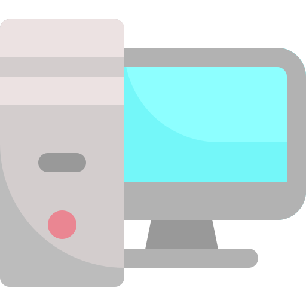
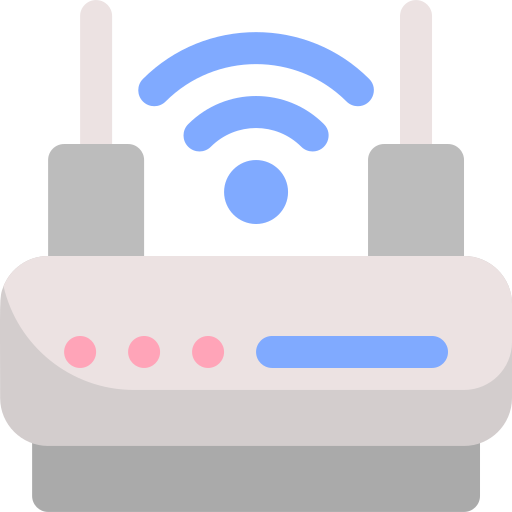
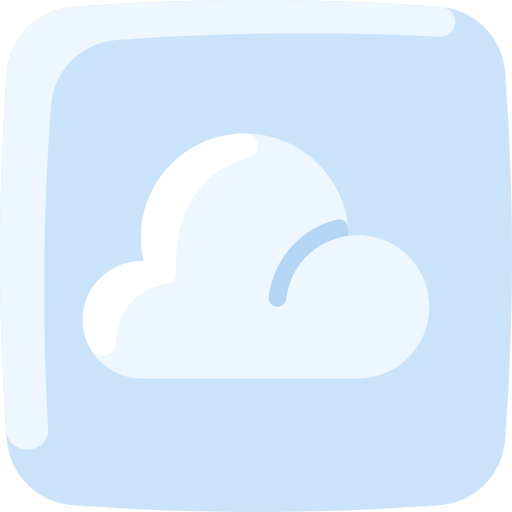
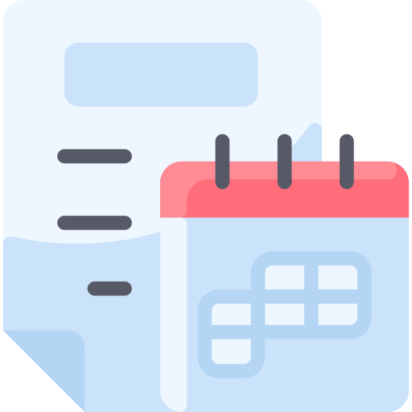

IT Skills / Experience
Hardware
- Troubleshooting and repairing hardware, including laptops, desktops and phones
- Desk setups and moves out of hours to avoid business disruption
- Successfully implemented project for upgrading meeting rooms, whilst liaising with 3rd Parties
- Building new devices and installing RL image through SCCM
- Overseen and created workflow process for auditing the stockroom.

Software
- Investigating software installation issues, an understanding of SCCM deployment and the ability to read logs for further analysis and troubleshooting
- Proficient in using and supporting Microsoft Office applications
- Confident with using and supporting multiple Operating Systems, including Windows 7 & 10, Mac OS and Ubuntu
- Experience in remotely configuring and supporting network hardware, servers, printers and other devices.
- Volunteering for releases and changes supporting application upgrades and maintenance.
- Supporting Legacy systems throughout the organization.

Problem Management - Recent
- Outlook contact Sync problem with contacts for Sales users
- Financial app updates for MG-ALFA – Arranged with Vendor the desktop site upgrade and setup for client and adapter
- Telephony problem – Identified fix with Horizon Agent to increase sample rate for the Avaya One-X application to solve ‘Robotic Calls’ issues.

Networks
- Completed CCNA Data Centre Course
- Undertaking CCNA 200-301 training with the intention of gaining qualification later this year
- An understanding of Network Principles and Protocols such as TCP/IP and OSI models
- Basic understanding of Switch & Router configuration, IP Addressing, VLAN’s and Subnetting
- Understanding of Layer 2 and 3 protocols including but not limited to LLDP, STP, VLAN, HSRP, NAT and OSPF.
- Utilised virtual labs to further understand Cisco technology and tools, including Wireshark and Packet Tracer.
VMware
- Good understanding on vSphere, Horizon, vRealize and other VMware tools
- Regularly pick up Incidents / requests relating to the tool and liaise with 3rd line colleagues for resolutions and knowledge.
- Confident in VM creation and configuration, including Full Clones, Linked Clones and Instant Clones
- Skills in managing users through the UEM console and application deployment through App Volume.
- Attended VMware courses to better my understanding of the product.

Azure
- Managing Resources
- Deploying Virtual Machines
- Configuring Virtual Networks
- Managing Identities

Projects
-
Polycom
Installing and setting up Polycom equipment in meeting rooms. - Alderley Office – Installing Switches, Firewalls and UPSs in the new Alderley Park office. Racking equipment and cabling.
-
Digital Workplace – Teams / 365
Supporting the Team project from start to completion. - RCA of issues, deployments and testing.
- Building request portal through PowerApps to automate Teams, SharePoint and Yammer creation
- Admin Tasks for Teams / SharePoint such as config changes.
- Documenting known issues, deployment process and tips for Support.
-
Horizon Client
Supporting all users across the business with upgrading their Horizon Client on Personal / Corporate devices. - A direct line for all emergencies with failed installations.
- Documenting remediation steps and helping users to perform these upgrades.
-
Horizon Agent upgrades – 2020
Deployed Horizon Agent through SCCM to batches of VMs out of hours and manually installed on failed machines / investigated the cause of this. -
Ireland
Support rebuilding the office after Covid lockdown forced the office closed for 2 years / setting up meeting rooms and conference rooms with ISDM support. -
VMware VGPU Project
Allocating GPUs to 120 RLAM VDIs and installing / licensing hardware manually every night for 2-3 weeks.